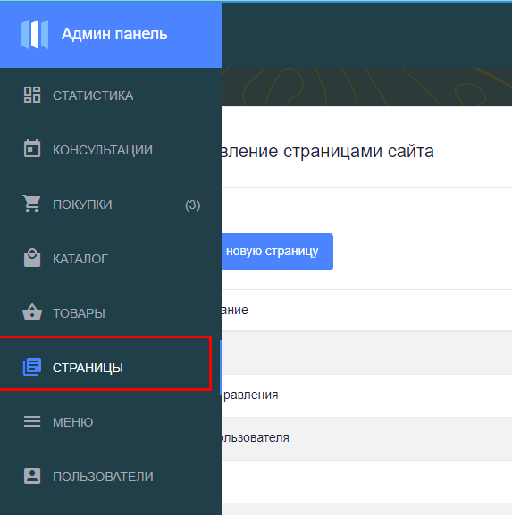

Страницы сайта
Создание и редактирование страниц сайта

Страницей подразумевается доступная ссылка сайта, где будут отображены какие-то материалы
Создание новой страницы
Для содания новой страницы необходимо нажать "Добавить новую страницу"
Создание или редактирование страницы происходит следующим образом
Внимание! Ссылка на страницу должна быть только английскими буквами или цифрами.
Внимание! Пробелы заменяем нажним подчеркиванием. Пример: "my_page1"
Как только заполните поля нажимаем применить и у нас создалась новая страница
Но это просто новый адрес доступный на нашем сайте. страница абсолютно пустая (белый лист)!
Ее необходимо наполнить материалами (смотри ниже)
При создании страницы мы указывали шаблон дизайна (главная страница - site1, второстепенные страницы - site2)
На каждом шаблоне имеются свои болоки, это место куда вы сможете разместить материал
С коде это выглядит примерно так
Чтобы управлять или просмотреть блоки в шаблонах необходимо перейти
Внимание! Блоки редко настраиваются обычно нам достаточно уже имеющиеся блоки
Материалы
Материалы добавляются в блоки, это как раз таки наполнение наших будущих страниц
Имеется возможность перемещения материала внутри одного блока
Самым первым делом нам нужно добавить верхнюю часть сайта (логотип, меню навигации и другое)
На этом примере мы уже навреное поняли что все новые материалы таким образом и пополняются
Внимание! Как вы наверное заметели что на страницы которые будет видеть
пользователь мы должны добавлять блоки только с окончанием index.php
-- А админские страницы с окончанием admin.php --
пользователь мы должны добавлять блоки только с окончанием index.php
-- А админские страницы с окончанием admin.php --

Редактирование материала
Нужно выбрать или расширение или вставить произвольный статичный html код